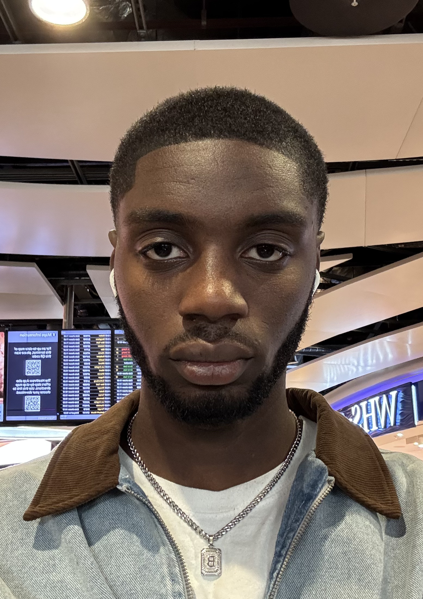

Cybersecurity · AI · Technology
Photo

About
I'm a Cybersecurity student at York University (NE) with a passion for technology and AI advancements. My goal is to apply my problem-solving and organizational skills to protect digital systems. Fluent in Italian bringing a multicultural perspective and strong communication skills.
Explored the movements and inner workings of a Parallax robot powered by an Arduino board. Gained hands-on understanding of hardware components, sensor integration, and embedded programming logic.
Gained foundational knowledge on protecting digital systems, networks, and data from cyber threats. Covered core principles of risk management, threat analysis, and defensive security strategies.
Developed key skills to create standards-compliant, accessible, and dynamic websites. Gained practical insights into contemporary web development practices and the modern browser ecosystem.
Developed and implemented graphic, image, and text artefacts using industry-standard design tools. Applied creative and technical thinking to produce polished digital media outputs.
My full résumé covers my professional experience in data, broadcast, and customer service, alongside my education in Cybersecurity and Computer Science. Available as a PDF below.